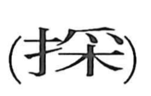

採

Kun: toru | On: sai
to pick ・ to take ・ to gather ・ to select ・ to adopt
Explanation
A phono-semantic character built on 采 as its phonetic core, giving the on-reading sai. The ancient form of 采 depicts a hand or fingertips poised above a tree, reaching up to pluck its fruit. When the hand classifier (扌) was added to this form, it focused the meaning into the concrete action of taking or picking—thus 採. In later usage 采 itself came to suggest “coloring,” the hues obtained from plants and trees, while 採 remained the verb for taking, choosing, or gathering.